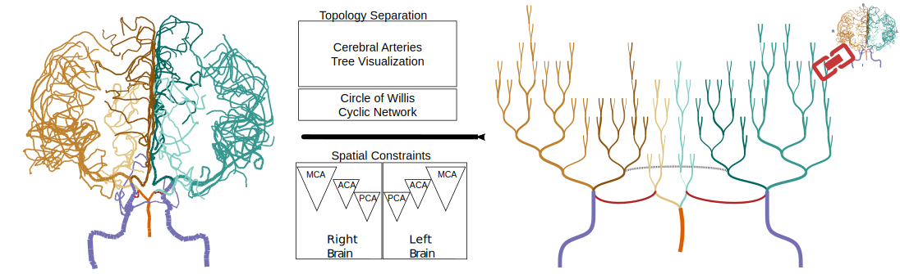

Aditeya Pandey, Harsh Shukla, Geoffrey S. Young, Lei Qin, Amir A. Zamani, Liangge Hsu, Raymond Huang, Cody Dunne and Michelle Borkin
Demo

Abstract: Blood circulation in the human brain is supplied through a network of cerebral arteries.
If a clinician suspects a patient has a stroke or other cerebrovascular condition they order imaging tests.
Neuroradiologists visually search the resulting scans for abnormalities.
Their visual search tasks correspond to the abstract network analysis tasks of browsing and path following.
To assist neuroradiologists in identifying cerebral artery abnormalities we designed CerebroVis, a novel abstract---yet spatially contextualized---cerebral artery network visualization.
In this design study, we contribute a novel framing and definition of the cerebral artery system in terms of network theory and characterize neuroradiologist domain goals as abstract visualization and network analysis tasks.
Through an iterative, user-centered design process we developed an abstract network layout technique which incorporates cerebral artery spatial context.
The abstract visualization enables increased domain task performance over 3D geometry representations, while including spatial context helps preserve the user's mental map of the underlying geometry.
We provide open source implementations of our network layout technique and prototype cerebral artery visualization tool.
We demonstrate the robustness of our technique by successfully laying out 61 open source brain scans.
We evaluate the effectiveness of our layout through a mixed methods study with three neuroradiologists.
In a controlled experiment our study participants used CerebroVis and a conventional 3D visualization to examine real cerebral artery imaging data and to identify a simulated intracranial artery stenosis.
Participants were more accurate at identifying stenoses using CerebroVis (odds ratio 2.5, absolute risk difference 13\%).
More broadly, we discuss the applications of our design approach to a general design paradigm we call \textit{Abstraction with Context}.
A free copy of this paper, the evaluation stimuli and data, and source code are available at OSF.
Website designed and developed by Aditeya Pandey